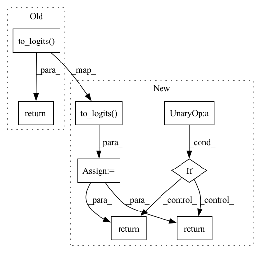

Pattern ID :21088

Before Change
memory_values = memory_values[-self.mem_len:]
x = torch.cat((outputs), dim = 1)
return self.to_logits(x)
After Change
memory_values = memory_values[-self.mem_len:]
x = torch.cat((outputs), dim = 1)
out = self.to_logits(x)
if not return_memory:
return out
return out, Memory(memory_keys, memory_values)
In pattern: SUPERPATTERN
Frequency: 4
Non-data size: 8
Instances
Fragment ID: 67745993
Project Name: lucidrains/feedback-transformer-pytorch
Commit Name: ecf1f7d1d6f4aaf5d44ad099ac5cbbcf5fcd1b91
Time: 2021-02-02
Author: lucidrains@gmail.com
File Name: feedback_transformer_pytorch/feedback_transformer_pytorch.py
M Class Name: FeedbackTransformer
N Class Name: FeedbackTransformer
M Method Name: forward(4)
N Method Name: forward(2)
M Parent Class: nn.Module
N Parent Class: nn.Module
M File Name: feedback_transformer_pytorch/feedback_transformer_pytorch.py
N File Name: feedback_transformer_pytorch/feedback_transformer_pytorch.py
M Start Line: 221
M End Line: 270
N Start Line: 226
N End Line: 283
'>
Before Change
mask = F.pad(mask, (0, self.image_seq_len), value = True)
out = self.transformer(tokens, mask = mask)
return self.to_logits(out)
After Change
mask = F.pad(mask, (0, self.image_seq_len), value = True)
out = self.transformer(tokens, mask = mask)
out = self.to_logits(out)
if not return_loss:
return out
offsetted_image = image + self.num_text_tokens
labels = torch.cat((text, offsetted_image), dim = 1)
labels = F.pad(labels, (0, 1), value = (self.total_tokens - 1)) // last token predicts EOS
loss = F.cross_entropy(out.transpose(1, 2), labels[:, 1:])
return loss
'>
Fragment ID: 67745987
Project Name: lucidrains/dalle-pytorch
Commit Name: fa7ab5506002acc0704b3ea6e85fdfc2d5f9a2d4
Time: 2021-01-06
Author: lucidrains@gmail.com
File Name: dalle_pytorch/dalle_pytorch.py
M Class Name: DALLE
N Class Name: DALLE
M Method Name: forward(5)
N Method Name: forward(4)
M Parent Class: nn.Module
N Parent Class: nn.Module
M File Name: dalle_pytorch/dalle_pytorch.py
N File Name: dalle_pytorch/dalle_pytorch.py
M Start Line: 172
M End Line: 173
N Start Line: 163
N End Line: 188
'>
Before Change
x = ff(x, use_triton = use_triton) + x
x = self.norm(x)
return self.to_logits(x)
After Change
x = ff(x, use_triton = use_triton) + x
x = self.norm(x)
logits = self.to_logits(x)
if not exists(labels):
return logits
logits = rearrange(logits, "b n c -> b c n")
return self.loss_fn(logits, labels)
'>
Fragment ID: 67745989
Project Name: lucidrains/triton-transformer
Commit Name: 80fcca960e94fbf3c682102518d4cac2a592ac7c
Time: 2021-09-18
Author: lucidrains@gmail.com
File Name: triton_transformer/triton_transformer.py
M Class Name: Transformer
N Class Name: Transformer
M Method Name: forward(3)
N Method Name: forward(4)
M Parent Class: nn.Module
N Parent Class: nn.Module
M File Name: triton_transformer/triton_transformer.py
N File Name: triton_transformer/triton_transformer.py
M Start Line: 136
M End Line: 147
N Start Line: 147
N End Line: 164
'>
Before Change
// out in the paper is linear(relu(ln(cls)))
return self.to_logits(x)
After Change
// out in the paper is linear(relu(ln(cls)))
logits = self.to_logits(x)
if not return_attn:
return logits
return logits, attns
'>
Fragment ID: 67745991
Project Name: lucidrains/tab-transformer-pytorch
Commit Name: 582ebc801797199e6f7d3ae491981335f251e451
Time: 2023-04-05
Author: lucidrains@gmail.com
File Name: tab_transformer_pytorch/ft_transformer.py
M Class Name: FTTransformer
N Class Name: FTTransformer
M Method Name: forward(4)
N Method Name: forward(3)
M Parent Class: nn.Module
N Parent Class: nn.Module
M File Name: tab_transformer_pytorch/ft_transformer.py
N File Name: tab_transformer_pytorch/ft_transformer.py
M Start Line: 201
M End Line: 209
N Start Line: 183
N End Line: 224